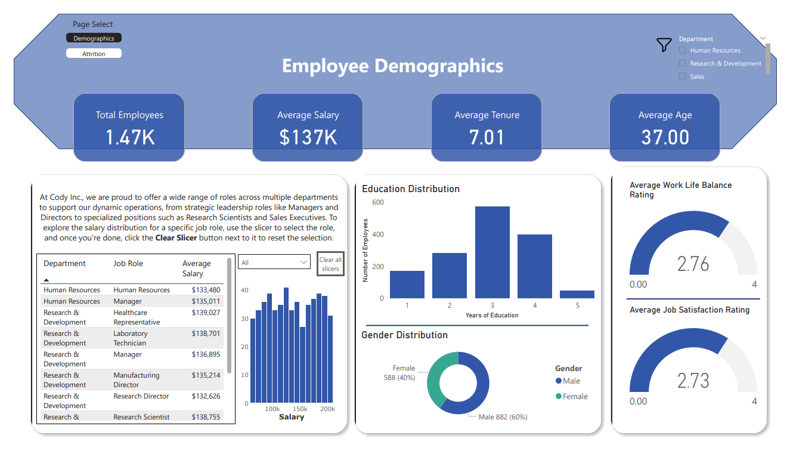
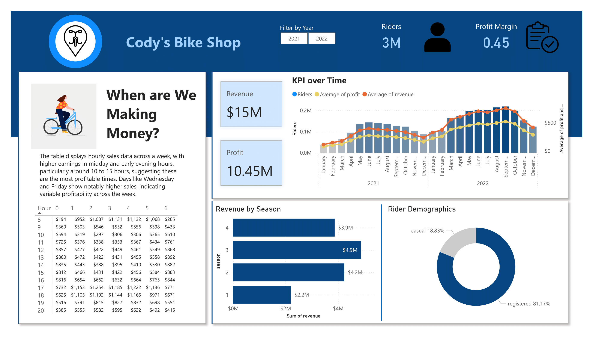

This HR Analytics Dashboard project leverages PostgreSQL, Power BI, and DAX to deliver real-time insights into workforce metrics such as attrition,
tenure, salary distribution, and employee satisfaction. I created a live connection between Power BI and the PostgreSQL database to ensure up-to-date
data visualization, using SQL for data extraction and transformation and DAX to compute custom KPIs. The interactive dashboard enables dynamic filtering
by department, role, gender, and age group, providing HR teams with a powerful tool for data-driven decision-making..


This project focuses on analyzing bike sales data to uncover valuable insights that can
inform business strategies. By utilizing PostgreSQL for querying the dataset and Power BI for data visualization, the project
identifies key trends, such as peak sales hours, revenue patterns, and customer demographics. These insights provide
actionable recommendations to optimize sales efforts, improve customer engagement, and maximize profitability.
This project highlights my ability to leverage data analytics tools to extract, analyze, and present complex data in a
visually compelling and actionable format.
The goal of this project is to analyze customer churn within a dataset to uncover patterns and factors influencing customer
retention and attrition. By examining various attributes such as contract types, internet services, total charges, and
demographic information, the project aims to provide actionable insights that can help in reducing churn rates and
improving customer retention strategies.
This project explores the performance of teams and players in a Valorant Champions Tour event,
focusing on key metrics like kill/death ratio, region performance, and role contributions.
Key insights are visualized in an interactive Tableau dashboard, offering a comprehensive view of the event’s outcomes across various factors.
This project focused on refining a job layoffs dataset to enhance data integrity and usability.
The process involved removing duplicate records, standardizing data entries, and addressing null or
blank values to ensure consistency. The result is a clean, reliable dataset that is ready for comprehensive
analysis and visualization, providing a solid foundation for insightful decision-making and trend identification